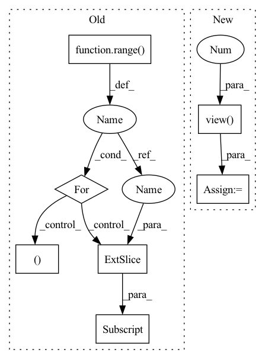

Pattern ID :395
Before Change
self.weight_read = torch.matmul(past_normalized, state_normalized.transpose(0, 1)).transpose(0, 1)
self.index_max = torch.sort(self.weight_read, descending=True)[1].cpu()
for i_track in range( self.num_prediction) :
present = present_temp
prediction_single = torch.Tensor().cuda()
ind = self.index_max [:, i_track]
//ablation study
// prediction_single = self.memory_count[ind]
// prediction = torch.cat((prediction, prediction_single.unsqueeze(1)), 1)
info_future = self.memory_fut[ind]
info_total = torch.cat((state_past, info_future.unsqueeze(0)), 2)
input_dec = info_total
state_dec = zero_padding
for i in range(self.future_len):
output_decoder, state_dec = self.decoder(input_dec, state_dec)
displacement_next = self.FC_output(output_decoder)
coords_next = present + displacement_next.squeeze(0).unsqueeze(1)
prediction_single = torch.cat((prediction_single, coords_next), 1)
present = coords_next
input_dec = zero_padding
prediction = torch.cat((prediction, prediction_single.unsqueeze(1) ), 1)
return prediction
def write_in_memory(self, past, future):After Change
prediction = torch.cat((prediction, coords_next), 1)
present = coords_next
input_dec = zero_padding
prediction = prediction.view( dim_batch, self.num_prediction, self.future_len, 2 )
return prediction
def write_in_memory(self, past, future):
In pattern: SUPERPATTERN
Frequency: 3
Non-data size: 7
Instances Fragment ID: 1536135
Project Name: marchetz/mantra-cvpr20
Commit Name: 04d7a063354c991d5aaa36f28a63df2ebbee9f78
Time: 2020-01-18
Author: francescom394@gmail.com
File Name: models/model_decoder.py
M Class Name: model_decoder
N Class Name: model_decoder
M Method Name: forward(2)
N Method Name: forward(2)
M Parent Class: nn.Module
N Parent Class: nn.Module
M File Name: models/model_decoder.py
N File Name: models/model_decoder.py
M Start Line: 128
M End Line: 166
N Start Line: 125
N End Line: 162
Before Change
total_loss = 0
predict = F.softmax(predict, dim=1)
for i in range( target.shape[1]) :
if i != self.ignore_index:
dice_loss, _ = dice(predict[:, i], {"targets": target[:, i] }, device)
if self.weight is not None:
assert self.weight.shape[0] == target.shape[1], \
"Expect weight shape [{}], get[{}]".format(target.shape[1], self.weight.shape[0])After Change
inputs = F.softmax(predict, dim=1)
//flatten label and prediction tensors
inputs = inputs.view(-1 )
targets = targets.view(-1)
intersection = (inputs * targets).sum()
dice = (2.*intersection + self.eps)/(inputs.sum() + targets.sum() + self.eps)
loss = 1 - dice
Fragment ID: 1536134
Project Name: kaylode/theseus
Commit Name: 4e1fe493ae162a9f96ed6d7fe175133bce081fae
Time: 2022-02-19
Author: pmkhoi@selab.hcmus.edu.vn
File Name: theseus/segmentation/losses/dice_loss.py
M Class Name: DiceLoss
N Class Name: DiceLoss
M Method Name: forward(4)
N Method Name: forward(4)
M Parent Class: nn.Module
N Parent Class: nn.Module
M File Name: theseus/segmentation/losses/dice_loss.py
N File Name: theseus/segmentation/losses/dice_loss.py
M Start Line: 68
M End Line: 84
N Start Line: 12
N End Line: 23
Before Change
self.weight_read = torch.matmul(past_normalized, state_normalized.transpose(0,1)).transpose(0,1)
self.index_max = torch.sort(self.weight_read, descending=True)[1].cpu()[:,:self.num_prediction]
for i_track in range( self.num_prediction) :
present = present_temp
prediction_single = torch.Tensor().cuda()
ind = self.index_max[:, i_track]
info_future = self.memory_fut[ind]
info_total = torch.cat((state_past, info_future.unsqueeze(0)), 2)
input_dec = info_total
state_dec = zero_padding
for i in range(self.future_len):
output_decoder, state_dec = self.decoder(input_dec, state_dec)
displacement_next = self.FC_output(output_decoder)
coords_next = present + displacement_next.squeeze(0).unsqueeze(1)
prediction_single = torch.cat((prediction_single, coords_next), 1)
present = coords_next
input_dec = zero_padding
// Iteratively refine predictions using context
for i_refine in range(1):
pred_map = prediction_single + 90
pred_map = pred_map.unsqueeze(2)
indices = pred_map.permute(0, 2, 1, 3)
// rescale between -1 and 1
indices = 2 * (indices / 180) - 1
output = F.grid_sample(scene_2, indices, mode="nearest")
output = output.squeeze(2).permute(0, 2, 1)
state_rnn = state_past
output_rnn, state_rnn = self.RNN_scene(output, state_rnn)
prediction_refine = self.fc_refine(state_rnn).view(dim_batch, 40, 2)
prediction_single = prediction_single + prediction_refine
prediction = torch.cat((prediction, prediction_single.unsqueeze(1) ), 1)
return prediction
After Change
prediction_refine = self.fc_refine(state_rnn).view(-1, 40, 2)
prediction = prediction + prediction_refine
//pdb.set_trace()
prediction = prediction.view( dim_batch, self.num_prediction, 40, 2 )
return prediction
def write_in_memory(self, past, future): Fragment ID: 1536133
Project Name: marchetz/mantra-cvpr20
Commit Name: 04d7a063354c991d5aaa36f28a63df2ebbee9f78
Time: 2020-01-18
Author: francescom394@gmail.com
File Name: models/model_memory_IRM.py
M Class Name: model_memory_IRM
N Class Name: model_memory_IRM
M Method Name: forward(3)
N Method Name: forward(3)
M Parent Class: nn.Module
N Parent Class: nn.Module
M File Name: models/model_memory_IRM.py
N File Name: models/model_memory_IRM.py
M Start Line: 123
M End Line: 179
N Start Line: 129
N End Line: 190